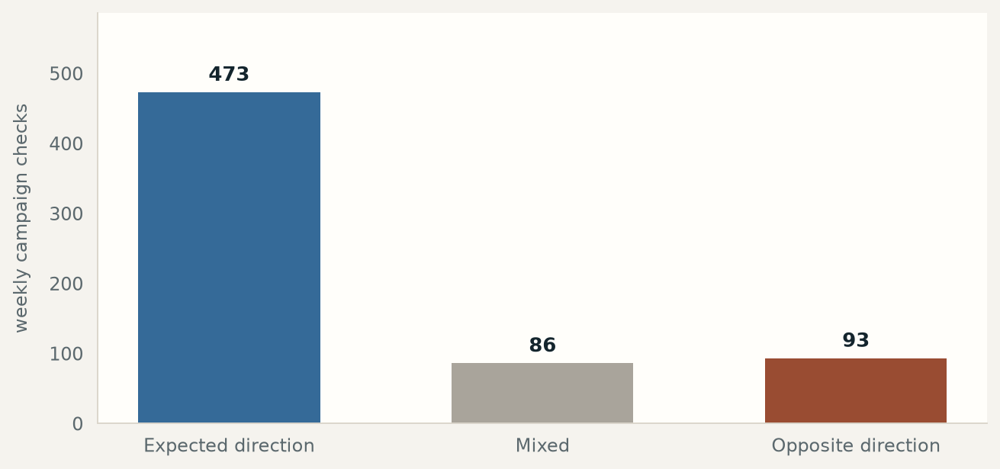
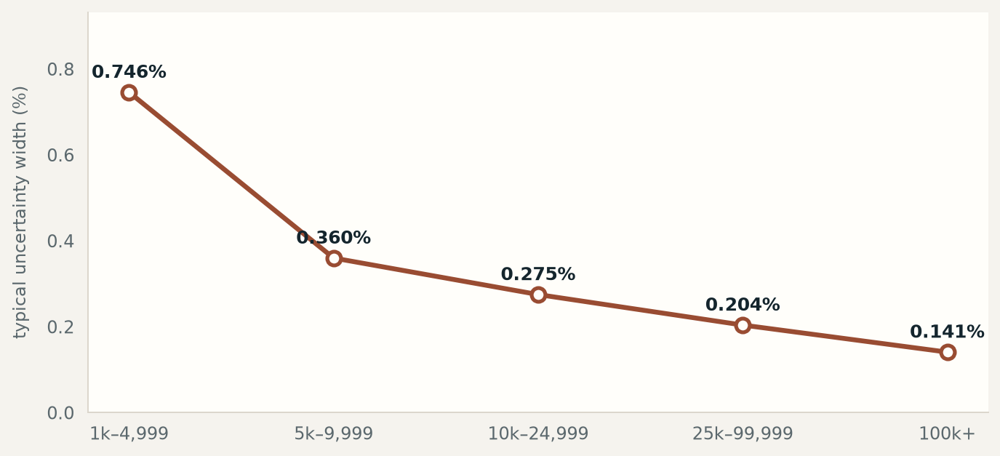
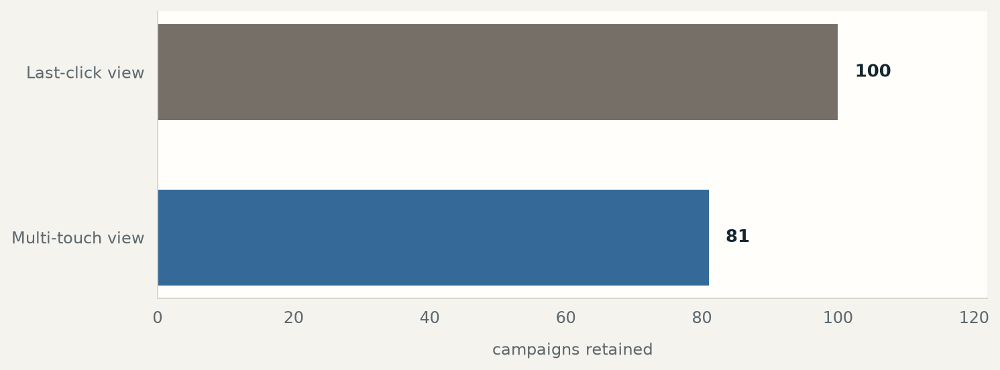
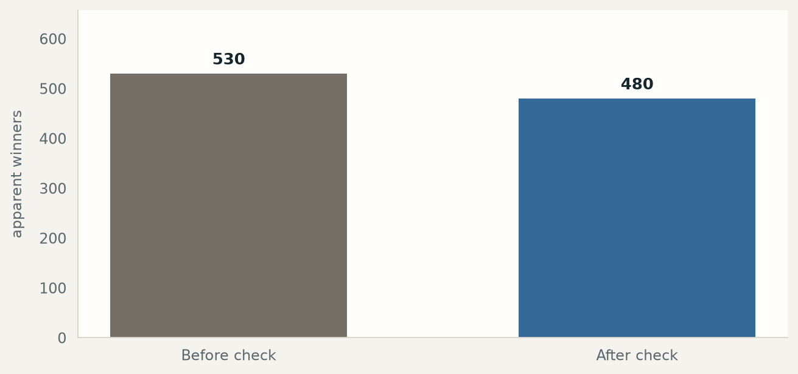
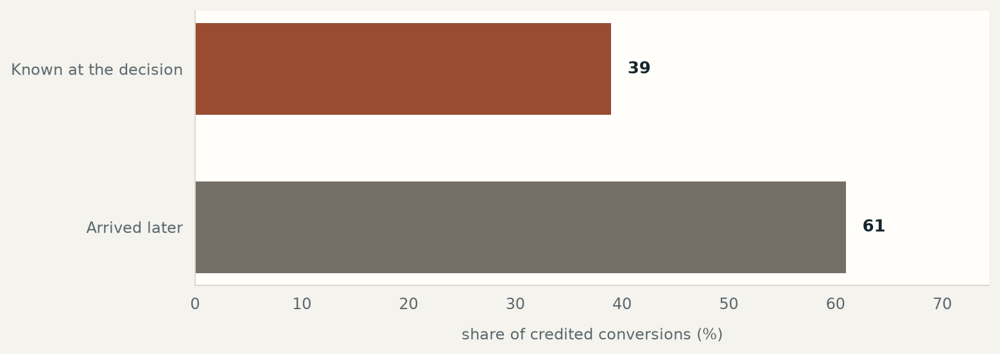

Marketing measurement · method & checks · optional
How I tested whether campaign reports counted late-arriving conversions.
This optional page shows four ways I tried to prove the first result wrong.
I changed the timing rule, changed the way campaigns received credit, checked whether testing many campaigns created false winners, and repeated the test week by week. The plan, supporting charts, and source record live here.
Four checks, translated.
Changing who gets credit changes the answer.
Changing who received credit changed the answer for 45 campaigns. On the same corrected data, 100 rows passed under last-click credit and 81 passed when credit was shared across several touches. 45 campaigns changed verdict depending on that choice; this is not a rounding difference.
The correction used 616 eligible campaigns, not all 675.
Most apparent winners still survived the stricter check. The public data contains 675 campaigns, but 59 did not have enough activity for this comparison, leaving 616.
The first screen found 530 apparent winners; 480 remained after correcting for the risk of finding winners by chance when testing many campaigns. The high survival rate reflects the amount of data in each eligible campaign, not a loose correction.
See the statistical cutoff
For technical readers, the Benjamini–Hochberg cutoff was q = 0.1 and p < 0.002.
I repeated the check week by week.
This is a separate check from the late-information screen above. Of the 652 campaigns with enough weekly activity, 93 stayed consistently above the comparison line, 473 stayed at or below it, and 86 moved between the two.
Read the first two numbers as one result, not opposing ones: 87% stayed on the same side week after week. The first week agreed with the full-data answer 88.4% of the time—the honest result for a real dataset, not a perfect one.
The prediction written before analysis did not fully match what happened. I kept that original prediction in the record instead of rewriting it after seeing the result; the mismatch is part of the evidence, not an inconvenience to hide.
The campaigns that survived had something in common.
The campaigns that survived were larger and attracted more clicks. They ran at 2.62× the number of ad views, 1.27× the click rate, and 0.16× the cost per customer of the campaigns that did not survive.
Their volume sat around the 77.3% percentile—higher than roughly three quarters of campaigns. The correction is not one-size-fits-all; it has a shape, and that shape matters before applying it elsewhere.
Five checks, read as a set rather than in isolation.
Each asks a different question: does the finding hold over time, weaken when there is less data, depend on how credit is assigned, survive a false-winner check, and match the timing story?





A real, tested pipeline, not a one-off script.
The build: 21 scripts run against a public Criteo advertising dataset, with seven ordered stages from collecting the data through making the decision.
The checks: separate steps test false alarms, week-to-week stability, and the other questions shown above. Automated tests must pass before a number is trusted.
The record: the dataset, run identifier, and data-shape check are kept with the evidence. The analysis plan was written before the false-alarm results were known; when a final rerun exposed an ordering concern, every later output was regenerated without rewriting the plan.
When claims matter, go deeper.
A plan written before analysis and a public dataset are what make this result checkable. That standard travels to any measurement problem.